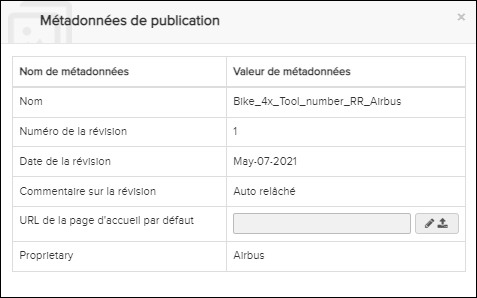
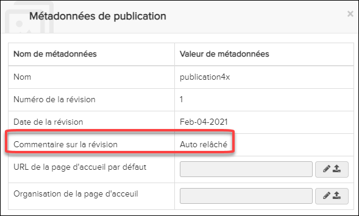

La boîte de dialogue de Métadonnée de
publication est ouverte en cliquant  Afficher les métadonnées icône dans barre de table de
matières.
Afficher les métadonnées icône dans barre de table de
matières.

Le tableau répertorie les métadonnées de publication. Si la publication a été créée à l'aide d'un générateur avec une trousse de métadonnées défini, des métadonnées supplémentaires sont répertoriées comme illustré dans cet exemple.

- Saisissez une URL dans le champ URL de la page d'accueil par
défaut ou téléchargez un Paquet ZIP de page de garde.
Non applicable pour Pinpoint Standalone Light.
Définir une page de destination par défaut ou une page de destination d'organisation
Non applicable pour Pinpoint Standalone Light.
Si la page de destination par défaut ou l'URL de la page de destination de l'organisation est définie, la page d'acceuil du Pinpoint affiche l'URL spécifiée dans un cadre iFrame. Cela signifie que tous les liens seront navigués à l'intérieur de ce cadre, le reste de Pinpoint autour de la trame restera statique. Le site chargé à partir de l'URL de la page d'acceuil ne peut pas interagir avec Pinpoint.
Lorsque vous visualisez une publication avec un jeu de pages d'acceuil, vous pouvez
toujours revenir à la page d'acceuil en cliquant sur le bouton  dans la barre
d'en-tête de contenu.
dans la barre
d'en-tête de contenu.
Notez que vous pouvez avoir un page d'acceuil "principale" pour l'application, comme décrit dans La fenêtre de configuration.
- Dans le champ URL de la page d'accueil par défaut ou
Organisation de la page d'accueil, cliquez sur l'icône
Modifier.
Le champ s'ouvre pour vous permettre de saisir l'URL.
- Entrez l'URL dans le champ.
- Cliquez sur le bouton Sauvegarder.
- Dans le champ URL de la page d'accueil par défaut ou
Organisation de la page d'accueil, cliquez sur l'icône
 Télécharger.
Télécharger.Le champ s'ouvre pour vous permettre de sélectionner un paquet ZIP à télécharger.
- Accédez au package compressé que vous souhaitez télécharger et sélectionnez-le.
- Cliquez sur le bouton
Sauvegarder.
Le téléchargement commence et un message de progression apparaît. Une fois le téléchargement terminé, le package ZIP est traité.
- Rafraîchissez la librairie et cliquez sur la publication pour afficher le fichier main.html dans la page d'acceuil. Le contenu du fichier main.html (liens / graphiques) s'affiche sur la page.
- Cliquez sur un lien vers un fichier pour ouvrir le fichier.Remarque : Vous pouvez seulement imprimer des fichiers HTML et PDF.
- Après avoir visualisé un fichier, sélectionnez l'une des options suivantes :
- Cliquez sur le bouton ferme à fermer la page d'acceuil.
- Cliquez sur le bouton Accueil pour revenir à la page principale.
Non applicable pour Pinpoint Standalone Light.
Le paquet se compose de la page d'accueil principale HTML (main.html) plus des fichiers supplémentaires de tout type de fichier. Les fichiers HTML, PDF, X3D, et graphiques sont liés / référencés et peuvent être ouverts en cliquant sur le lien. Pendant le téléchargement, ces fichiers sont indexés, ce qui signifie que vous pouvez les rechercher à l'aide de la recherche en texte intégral. D'autres types de fichiers, par exemple, un document Word ou un fichier XML, ne sont pas indexés ou affichés dans Pinpoint, mais peuvent être téléchargés sur votre ordinateur.
Exemple principal.html:
<!DOCTYPE HTML>
<html>
<head>
<link rel="stylesheet" type="text/css" href="1.css"/>
<meta http-equiv="Content-Type" content="text/html; charset=UTF-8" />
<title>Splash Page</title>
<meta name="description" content="Splash Page" />
<link rel="stylesheet" type="text/css" href="2.css"/>
<style> .link-springgreen { color: springgreen; }</style>
</head>
<body style="overflow-y: hidden" >
<div>
<div class="center">
<a href="1.html" class="link-red">HTML 1</a> <br>
<A href="html/2.html" class="link-springgreen">HTML 2~</A><br>
<a href="html/3/3.html">HTML 3</a><br>
<a href="html/4.html">HTML 4 - ignore case</a><br>
<a href="1.pdf">PDF 1</a><br>
<a href="pdf/2.pdf">PDF 2</a><br>
<a href="pdf/3.pdf">PDF 3 - large</a><br>
<a href="pdf/4level/4.pdf">PDF 4 - multiple levels</a><br>
<a href="pdf/4level/5.pdf">PDF 5 - ignore case</a><br>
<a href="1.jpg">JPG 1</a><br>
<a href="1.png">PNG 1</a><br>
<a href="1.docx">Word 1</a><br>
<a href="2.docx">Word 2 - ignore case</a><br>
<a href="1.SvG">SVG 1 - ignore case</a><br>
<img src="1.jpg" alt="JPG 1" width="50%"><br>
<img src="1.png" alt="PNG 1" width="450px"><br>
<img src="1.svg" alt="SVG 1" height="450px"><br>
<img src="html/java.jpg" alt="JPG Jave" height="45%"><br>
</div>
</div>
</body>
</html>
Le main.html et les fichiers auxquels il fait référence doivent tous être inclus dans le fichier zip que vous téléchargez.

Exemple de structure de répertoire Splash
- Le main.html est l'entrée du paquet de traitement. <a> n'est pris en charge que dans main.html.
- HTML, PDF et toutes sortes de graphiques seront affichés dans la page d'accueil. Les autres types de fichiers, tels que MS Word, ne seront pas affichés, mais peuvent être téléchargés.
-
Les liens Hotspot vous permettent d'ouvrir des publications directement dans la page de destination, avec une groupe d'application. Les paramètres requis sont ID de librairie / Nom de librairie et ID de publication / Nom de publication.Remarque : Lors de la liaison à une librairie avec une structure de multiples dossiers, telle que CMM, l'attribut ID de publication est requis.
Exemple (ID de Libraire /ID de Publication) :
<span class="landingHotspotLink link-red" data-parameter= "libraryId=4156d97f-1b40-4c24-9554-b06dcfa76361&publicationID= b685357e-3aa7-4c08-82fb-b8d84bb4c4f2&filterAttr=CEC &filterAttrValues=009">A320-TSM Filter</span>
Exemple (Nom de Libraire /Nom de Publication) :
<span class="landingHotspotLink link-springgreen" data-parameter=" libraryName=A320&publicationName=TSM&id=EN23110081080200&filterAttr=CEC &filterAttrValues=009">A320-TSM Document Filter(By Name)</span>
Vous pouvez également spécifier un lien "onclick".
Exemple (onclick):<a href="#" onclick="openLandingHotspotLink('libraryId= 0a33bce8-d684-43da-b358-1404919dd6e1&publicationID= 21291786-0f4d-4d05-9270-4075fed51ca5&id=A350-A-22-3X-XX-0Q001-429A-A')" >A Link to A350-TSM-Document(id+id)</a>- Le chemin vers les liens ou les balises IMG, ne prennent pas en charge le niveau
précédent.Exemple :
<a href="html/3/3.html">HTML 3</a>
(supporté)<a href="../html/3/3.html">HTML 3</a>
(non supporté)
- Le chemin vers les liens ou les balises IMG, ne prennent pas en charge le niveau
précédent.
- Un fichier CSS externe sera ajouté à <style> </ style> de HTML.
- Un fichier JS externe n'est pas supporté.